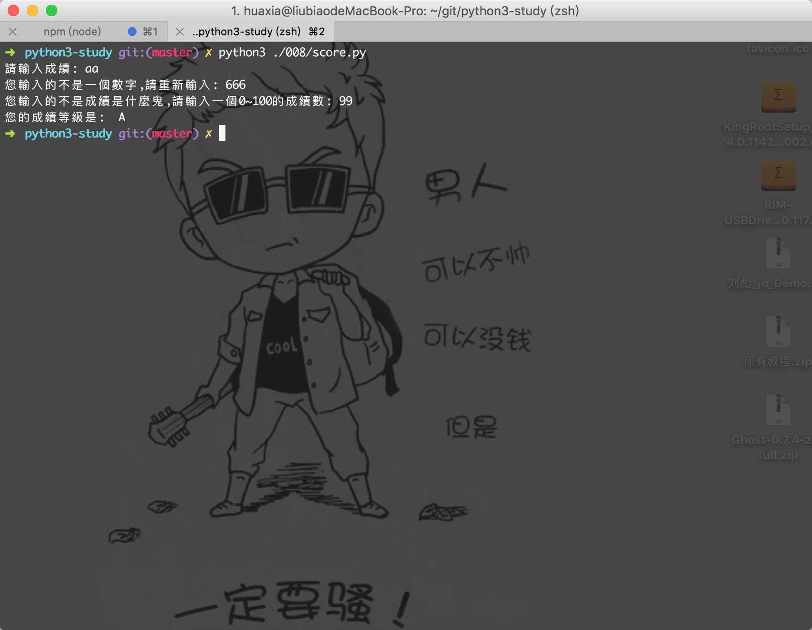

学习Python 008
測試題：
0.
if not (money < 100): 上边这行代码相当于？
相當於：if money >= 100
1.assert 的作用是什么？
assert这个关键字我们称之为“断言”，当这个关键字后边的条件为假的时候，程序自动崩溃并抛出AssertionError的异常。
什么情况下我们会需要这样的代码呢？当我们在测试程序的时候就很好用，因为与其让错误的条件导致程序今后莫名其妙地崩溃，不如在错误条件出现的那一瞬间我们实现“自爆”。
一般来说我们可以用Ta再程序中置入检查点，当需要确保程序中的某个条件一定为真才能让程序正常工作的话，assert关键字就非常有用了。
2.假设有 x = 1，y = 2，z = 3，请问如何快速将三个变量的值互相交换？
x, y, z = z, x, y
3.猜猜 (x < y and [x] or [y])[0] 实现什么样的功能？
这其实是 Python 的作者还没有为 Python 加入三元操作符之前，Python 社区的小伙伴们灵活的使用 and 和 or 搭配来实现三元操作符的功能，这里边有涉及到列表和切片的知识，这部分知识很快就会學到。
4.你听说过成员關係运算符吗？
Python 有一个成员资格运算符：in，用于检查一个值是否在序列中，如果在序列中返回 True，否则返回 False。
>>> name = '花開半春入了夏'
>>> '夏' in name
True
>>> '秋' in name
False
後面我们讲解 for 语句的时候，你看到 in 会不会就有了更深入的理解？！
動動手：
0.教程中使用 if elif else 在大多数情况下效率要比全部使用 if 要高，但根据一般的统计规律，一个班的成绩一般服从正态分布，也就是说平均成绩一般集中在 70~80 分之间，因此根据统计规律，我们还可以改进下程序以提高效率。
解析：if判斷當滿足這一條件時，就結束判斷，所以 平均成绩一般集中在 70~80 分之间 ,那麼就先進行這一判斷即可提高效率；
# 使用if判斷將成績分數轉換為 A B C D四個檔次
# 90~100: A
# 80~89: B
# 60~79: C
# 0~59: D
# 且 平均成绩一般集中在 70~80 分之间，要求提高程序效率
score = input('請輸入成績: ')
grade = 'A'
while not score.isdigit():
score = input('您輸入的不是一個數字,請重新輸入: ')
score = int(score)
while score < 0 or score > 100:
score = input('您輸入的不是成績是什麼鬼,請輸入一個0~100的成績數: ')
# 每次輸入后需要將其轉換為數字，否則hi報錯
score = int(score)
if 60 <= score < 80:
grade = 'C'
elif 80 <= score < 90:
grade = 'B'
elif 90 <= score <= 100:
grade = 'A'
else:
grade = 'D'
print('您的成績等級是: ', grade)

1.Python 的作者在很长一段时间不肯加入三元操作符就是怕跟C语言一样搞出国际乱码大赛，蛋疼的复杂度让初学者望而生畏，不过，如果你一旦搞清楚了三元操作符的使用技巧，或许一些比较复杂的问题反而迎刃而解。
small = x if (x < y and x < z) else (y if y < z else z)
三元運算符語法是：X if C else Y

微信打賞

支付寶打賞